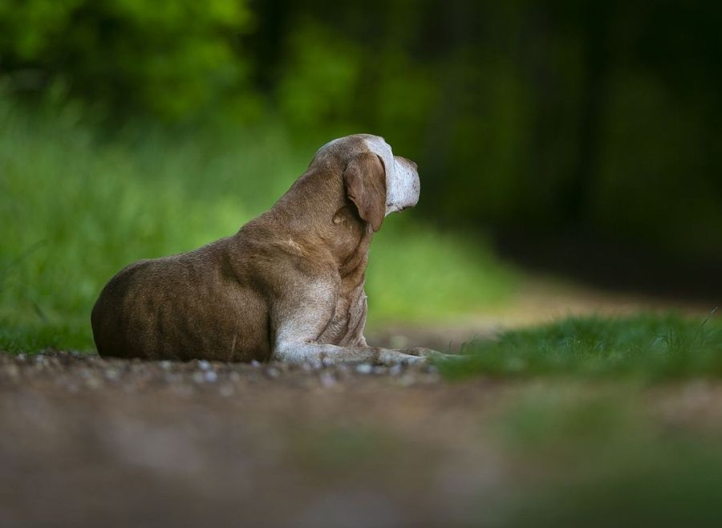

Rozvrh na tento týden, informace k akcím a především gratulace k úspěchům na zkouškách.
Vzhledem k naplnění kapacity nyní nebereme nové zájemce o výcvik. Děkujeme za pochopení.
Cvičení tento týden, předodjezdové info a úspěšný… skvělý víkend!
Tento týden bohužel hodiny cvičení vypisovat nebudeme, protože už pilně připravujeme náš výcvikový tábor. Čeká nás ještě spousta práce, aby bylo všechno připravené a mohli jsme si společně tábor co nejvíce užít. Pro všechny táborníky máme také připravené předodjezdové informace – najdete je zde . A teď už k tomu, z čeho máme obrovskou radost! Úspěšný víkend na všech frontách! Na VZ ve II. ceně uspěla kraťaska Gréta! Na LZ v I. ceně zvládly zkoušky NDO Beggy a MOK Temi, která navíc obsadila krásné 3. místo! Na VP v I. ceně obstála NDO Stella. Na PZ v I. ceně uspěli maďarští ohaři West a Dolphin, kteří tímto splnili také poslední podmínku chovnosti. Na ZN obstál jezevčík Fanda. Na VZ ostatních plemen v I. ceně obstála parsonka Judy, která s námi byla na víkendu v Kašperkách. A ani naši instruktoři nezaháleli! Na Memoriálu Kobzy (VZ CACT) uspěla „velká“ Jana s Cucankou v II. ceně! Na ZV obstála „malá“ Jana s Bábou v I. ceně a Martin s Ančovičkou také v I. ceně. Na KZV jagošů měla svou premiéru Simča se svým svěřencem a hned z toho bylo 1. místo v I. ceně! Na PZ startoval Burák s Patrikem a také on si v I. ceně odvezl příčku nejvyšší! Prostě víkend, který se opravdu povedl na všech frontách! Moc všem gratulujeme k nádherným výsledkům a děkujeme za skvělou reprezentaci! A teď už se naplno vrháme do příprav tábora!
Rozvrh hodin, zkouškové úspěchy
Cvičení na tento týden máte vypsané. Uvidím, jak bude příští týden. Je to týden příprav před táborem. Info pro táborníky, bude brzo.
Jinak velké gratulace těm, kterým se o víkendu dařilo na zkouškách. Na BZH uspěl v I.ceně s plným počtem bodů bordík Alf. Na BZ Alf bohužel za limitku v II.ceně. Na KVZPR v III.ceně obstál GR Joey. Na VP v I.ceně bodovala SHS Grace! Všem moc blahopřejeme.
Cvičení na tento týden, víkendové úspěchy
Rozvrh hodin na tento týden je vypsaný. Snad se tak nějak většina chytne. Kdyby něco, tak pište. Jinak o víkendu se dařilo na zkouškách. Na podzimních zkouškách v I.ceně jako vítěz! uspěla SHS Grace. Na VP v II.ceně uspěl FXH Frodo. Na KZPR se dařilo GR Dinnovi, který obstál v I.ceně. Na KVZPR zazářila FCR Rory a získala I.cenu a Res. CACT! Za limitku zde uspěl i Joey v II.ceně! Na Mem. Hejného v II.ceně uspěla KO Gréta! Moc všem gratulujeme!
Rozvrh hodin, info o akcích, prázdninové úspěchy
Prázdniny pomalu končí a my se zase vracíme do cvičícího režimu. Cvičení na tento týden už máte vypsaná a my se na vás i vaše čtyřnohé parťáky moc těšíme! Pilně pracujeme také na přípravách našeho tábora, který je plně obsazen. Máme z toho obrovskou radost a už se nemůžeme dočkat. O víkendu proběhl také náš historicky první – „nultý“ ročník Senior Cupu. Velké díky všem, kteří nám pomohli s organizací, přípravami i samotným průběhem celé akce. Doufáme, že se vám Senior Cup líbil a že se z něj stane tradice. Snad se potkáme zase příští rok! A co se dělo o prázdninách? Rozhodně se nezahálelo! Někteří z vás pilně trénovali a vyrazili se svými parťáky na zkoušky. A že těch úspěchů nebylo málo! Vodní práce: MMO Kira – I. cena MMO Hero – I. cena KO Poly – I. cena a krásné 2. místo. MOK West – premiéra na zkouškách, II. cena za limitku. KVP retrívrů: Zlatka – I. cena, 2. místo a titul CACT! GR Joey I.cena Podzimní zkoušky: KO Poly – I. cena KPZ: MOK Coudy – I. cena KZPR :GR Dino – III. cena za limitku OVVR: CBR Mates – obstál Lesní zkoušky:JGT Egon – III. cena a za limitku AC Medík – II. cena
O Pohár hradu Valdek - GR Joey KVP I.cena CCT, CACT, KPZ I.cena CCT, CACT, celkový vítěz! Uf! Snad jsme na nikoho nezapomněli. Pokud ano, určitě se nám připomeňte, rádi váš úspěch doplníme. Všem vůdcům i jejich čtyřnohým parťákům moc gratulujeme! Máme radost z každého vašeho úspěchu a těšíme se na další zprávy. Tak zase hurá do práce!
SENIOR CUP, TÁBOR, cvičení ČERVENEC/SRPEN, víkendové úspěchy
V kalendáři akcí najdete řád, propozice a přihlášky na SENIOR CUP. Takže vy, co se chcete pobavit se svým „veteránem“, užít trochu srandy a ukázat, že ještě nepatří do starého železa, neváhejte poslat přihlášku. Tábor, který máme letos v září je téměř naplněn. Zbývají cca dvě tři místa :).
Jinak nyní máme dovolenkovou pauzu a cvičit budeme až od půlky srpna. Budeme se na vás těšit. Když bude změna, sledujte FB nebo tady na webu novinky.
Ještě nesmím zapomenout na víkendové úspěchy. Na 3. místě na VP dokončila v I.ceně MMO Freya, Ve III.ceně (za rošťácké limitky) uspěl na Středočeském derby retrívrů lotr golden Ferda! Držíme palce všem do nadcházejícího víkendu a těšíme se na info!

Rozvrh hodin na pondělí a úterý, další info
Rozvrh cvičení na pondělí a úterý máte vypsaný. Další hodiny přidáme dle situace zítra či v úterý. Víkendové úspěchy doplníme také průběžně.
Cvičení, poděkování, PŘIHLAŠOVÁNÍ NA TÁBOR, víkendové úspěchy
Cvičení na další dny tohoto týdne bude možná doplněno zítra. Následující týden upřesníme. Sledujte novinky. Jinak moc děkujeme všem, kteří s námi strávili dnešní podvečer a odběrem krve svého hafana a pomohli k výzkumu. Jsme moc pyšní na to, jak ukázněně se pejsci chovali a také na to, jaká jsme super parta!
V kalendáři akcí najdete přihlášky a propozice na tábor. Tímto je otevřeno přihlašování. Senior cup ještě ladíme. Bude snad v nejbližší době!
Jinak gratulace ke zkouškám tentokrát letí k Méďovi, který si v rámci tréninku dal dvoudenní akci a vedl si parádně. Oba dva dny v plných bodech zvládl BZ a BZH. BZ na třetím a BZH na druhém místě! Moc blahopřejeme!
Cvičení o prázdninách, seniorCUP, tábor, víkendové úspěchy
Tak máme za sebou poslední výcvikový víkend a hurá na prázdniny. Fotečky z víkendu na LZ najdete na rajčeti. Hodiny na tento týden máte v rozvrhu. V průběhu července a druhé polovině srpna se budeme snažit přidávat hodiny klasicky do rozvrhu. Kdyby někomu nějaká hodina chyběla nebo trénoval na zkoušky, tak se domluvíme individuálně. Pište, volejte. Brzo také dáme do kupy propozice na „senior cup“ a bude i info a přihlašování na tábor. Sledujte web. Jinak o víkendu se na zkouškách dařilo Egonovi, který v I.ceně uspěl na zkouškách z vodní práce, dále v I.ceně na barvě obstál jezevčík Bárt a v pondělí Bárt dokončil i ZVVZ i když za limitku v ceně III. Ale LUP má! Takže moc gratulujeme!
Informace k víkendu na LZ, cvičení tento týden, víkendové úspěchy
Zde najdete informace pro účastníky intenzivního víkendového výcviku na LZ. Ohledně ubytka apod. volejte Zuzku. Jinak tento týden vzhledem k rodinným, teplotním a jiným komplikacím nebude cvičení. S některými se uvidíme na víkendu a příští týden snad cvičíme normálně. Jinak o parném víkendu se dařilo retrívrům. Na OVVR s plným počtem bodů, na zvěři a na krásném 2.místě obstál LR Egon! Na Severočeském Derby zvítězil v I.ceně s tituly CCT a CACT Joey. Ferda v sobotu na PZ obstál v I.ceně a v neděli se uvařil a došel v ceně III. I tak velká gratulace. Bylo to opravdu náročné!
Rozvrh cvičení, víkend na LZ, víkendové úspěchy
Hodiny na tento týden máte v rozvrhu. Cvičíme středu a čtvrtek. V pátek je vysvědčení :). O víkendu jsme v parnu pocvičili vodu. Fotečky najdete v galerii na rajčeti. Jinak prodloužený víkend přípravy na LZ, který bude první červencový víkend je plně obsazen. Bereme pouze náhradníky.
O víkendu se zkouškovalo a úspěch tentokrát slavil GR Joey, který na KLZ získal I.cenu a titul Res. CACT. Na norování nováčků v plných bodech obstáli jezevčík Calvin a foxlík Bárney. Calvin k tomu ještě přidal LZ v I.ceně! Moc blahopřejeme!
Rozvrh cvičení, info pro účastníky „vodního“ víkendu, úspěchy na zkouškách
Cvičení na tento týden máte vypsané. Jinak zde najdete předodjezdové info pro účastníky výcvikového víkendu přípravy na vodní zkoušky. O víkendu se úspěšně předvedlo na zkouškách hned několik našich „oveček“. Na LZ za limitku obstál v II.ceně golden Ferda, na BZ v I.ceně uspěl jezevčík Alex. Na KVP v I.ceně obstála flatka Mája a V II.ceně její dcera Rory (přesto, že s námi cvičí krátce, máme radost a blahopřejeme!). Na PZ v I.ceně obstála maďarka Eby, v II. ceně její ségra Ellie a ve III.ceně jejich kámoška MMO Freya! Moc gratulujeme!
Víkendová příprava na lesní zkoušky, galerie
V kalendáři akcí najdete propozice a přihlášky na červencový víkend přípravy na lesní zkoušky. Zároveň jsme doplnili galerii na rajčeti o letošní víkenďáky.
Rozvrh cvičení na tento týden, Kašperky, víkend na vodu, víkend na les, víkendové gratulace
Rozvrh hodin na tento týden máte vypsaný. Uvidíme, co počasí. Snad vše klapne. Jinak čtvrteční podzimky jsou především pro ty, kteří o víkendu vedou...ti mají místo rezervované. O víkendu proběhl výcvik v Kašperkách, určený pro ostatní plemena. Doufám, že si jej všichni užili. Díky za super partu!
Jinak příští víkend proběhne výcvikový víkend na vodní práce a víkend je plně obsazen. Bereme již pouze náhradníky. Během příštího týdne přidáme propozice na červencový víkend - lesní zkoušky.
O víkendu se zápolilo na zkouškách. Na KBZH si výborně vedl dalmatin Bonaparte, který se stal vítězem zkoušek a získal titul CACT! Na Východočeském derby retrívrů se předvedl golden Joey, na KPZ i KVP uspěl v I.ceně a získal Res. CACT a celkově 3.místo v Derby! Na BZ startoval jezevčík Bart, který za limitku obstál v III.ceně. Moc všem gratulujeme!
Propozice a přihlášky na vodní víkend a gratulace retrívrům
Přihlášky a propozice najdete v kalendáři akcí.
Jinak velké gratulace k úspěchům našich goldenů. Dodatečně Ferdovi s Míšou k KPZ v II.ceně a KVP v I.ceně jako vítěz a s titulem CACT! Na Derby ČR zazářil Joey, který se stal vítězem Derby a obdržel titul CCT a CACT! Velká gratulace!
Jak s námi začít
Napište nám pár informací o Vás, o Vašem pejskovi a Vašich plánech.